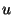

This section describes the signature of structure CMB. Since structures representing cross-compilers have the same signature, everything said here applies ( mutatis mutandis) to them as well.
The primary function to invoke the bootstrap compiler is CMB.make':
val make' : string option -> bool
This (re-)compiles the interactive system's entire source tree,
constructing stable versions for all libraries involved. In the
process, binfiles are placed under directory .bin.
arch- os where arch and os are strings describing
target architecture and target OS, respectively. The string is
the optional argument to CMB.make'. If set to NONE, it
defaults to "sml".
An alternative equivalent to invoking CMB.make' with NONE is to use CMB.make:
val make : unit -> bool
CMB--like CM--maintains a lot of internal state to speed up repeated invocations. (Between sessions, much of this state is preserved in those binfile- and stablefile-directories. However, reloading is still quite a bit more expensive than directly using existing in-core information.)
Information that CMB keeps in memory can be completely erased by issuing the CMB.reset command:
val reset : unit -> unit
After a CMB.reset(), the next CMB.make (or CMB.make') will have to re-load everything from the file system.
CMB has its own registry of ``CM identifiers''--named values that can be queried by using the conditional compilation facility. This registry is initialized according to CM's rules. Of course, initial values are not based on current architecture and OS but on those of the target system. To explicitly set or erase the values of specific variables, one can use CMB.symval (which acts in a way analogous to CM.symval):
val symval : string ->
{ get : unit -> int option, set : int option -> unit}